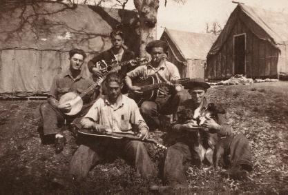

Select your area of interest:
Home* Lap Steel* 3 String Guitar* "Regular" Guitar* Violin* Bass*
Banjo* Mandolin* Ukulele* Home Recording* Links
Welcome to Bluestem Strings!
Bluestem Strings mission is to provide information related to the design and construction of various musical instruments, particularly the lap steel guitar and open back banjo. I have been an avid experimenter/builder of musical instruments for over 30 years, and it is my hope that this site will provide those who desire to construct a professional grade lap steel, open back 5 string banjo, or other type of instrument some of the inspiration to do so. You'll find lots of free information here, including free detailed plans for several instruments.
Playing an instrument built by your own hand is a particularly rewarding endevour that I wish everyone could experiance, and perhaps this website may serve to encourage or enable you to do that. As Martha would say, "...and that's a good thing."
You'll find information relating to lap steel guitar, banjos of various types, electric violin, upright bass, the mandolin family, and ukulele as well as a bit about related interests such as home recording.
Use the upper menu to select your area of interest; each selected catagory will display a further sub-menu to guide you to more specific information. Try it, you'll like it!
The web is a great way of passing along a bit of what I've learned, although it isn't possible to present it all on a few web pages so I provide ordering information if you wish to purchase one of the more detailed construction guides for various instruments. Most feature a full size printed plan, detailed notes, and several hundred sequential photos detailing the entire construction process of the instrument. For a small fee you get to watch over my shoulder as I go through the entire building process.A bit of Bluestem Strings history...
I have played music continually from the age of 10, inspired initially by my dad, who played guitar and traveled extensively through the southeast as a member of "Arnold Lester's Mountain Ramblers". He is visible at the 1 o'clock position in the photo below, taken in a California Civilian Conservation Corps camp in the late-30's.

I have maintained a website since 1999 with free plans and construction guides for various musical instruments; the pop-up advertisements and obtrusive nature of my original "free hosting" site drove me to pay for server space and create this website. This site sees an average of 350 megabytes of daily use with over 2500 page views per day, so obviously some folks are finding it useful. The sale of lap steel, banjo, and low-tuned mandolin, and Ukulele plans and construction guides serve as a way of covering the expenses of providing advertisement free information for prospective builders. Hopefully you'll appreciate the ad-free nature of this site.
If you appreciate the information I've provided here, free of pop-ups and ads, PLEASE drop a few bucks in the donation jar at your local humane society! They can't say thank you but I will.
Contact information:
If you desire to e-mail: Pease use rcordle (substitute the at symbol here) fastmail (substitute the dot here) fm and be sure to include "Bluestem Info Request" in the subject line.